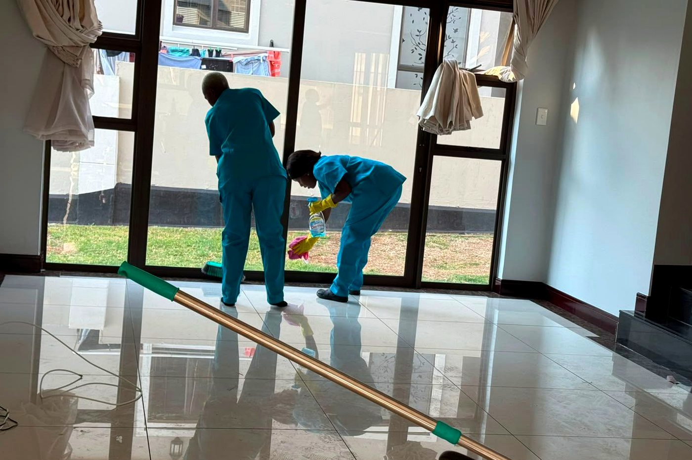
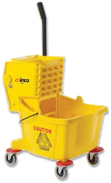
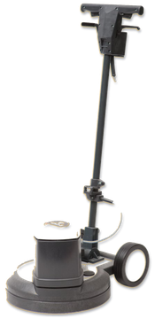
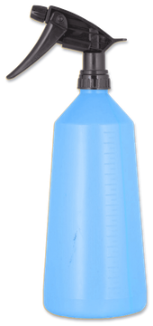
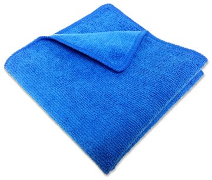
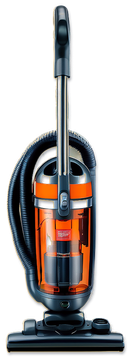
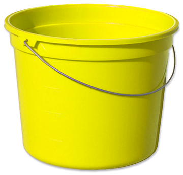
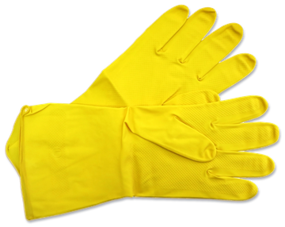
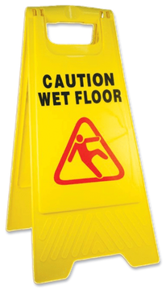
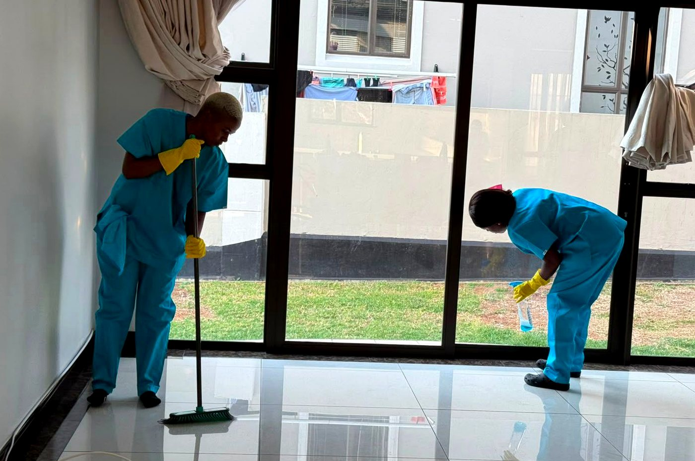

Apartment Cleaning
Routine and deep cleaning for flats, sectional title units, student apartments and rental properties.
Once-offWeeklyMonthly
What we do
PrimeCare Cleaning supports everyday home cleans, once-off deep cleans, commercial schedules and formal contract cleaning for organisations that need dependable teams and documented standards.

Our services
PrimeCare Cleaning is structured like a simple booking service for homes and a serious operating partner for organisations. Choose the service type, tell us what matters most, and we scope the clean around access, priorities, products, timing and supervision.








South African context

Offices, retail spaces, estates, municipal buildings and busy family homes.

Holiday lets, sectional title blocks, schools, clinics and hospitality-adjacent facilities.

Transport-aware scheduling and supervisors who understand each community's practical rhythms.
Sector coverage
PrimeCare can support once-off cleans, recurring housekeeping and larger site-based programmes. The service is built around clear scope, trained teams, site instructions and a practical communication loop.

Regular cleaning, deep cleaning, cupboard wipe-downs, kitchen detailing, windows and move-in support.

Reception areas, desks, boardrooms, staff kitchens, ablutions, showroom floors and shared facilities.

Clinics, schools, training rooms and public-facing facilities where consistency and hygiene are essential.

Post-build dust control, debris-ready preparation, detailed finishes and presentation before occupation.

Common areas, clubhouses, refuse rooms, stairwells, entrances, lifts and periodic deep-clean rotations.

Tender-aligned cleaning support, site checklists, supervisor reporting and contract-ready service routines.